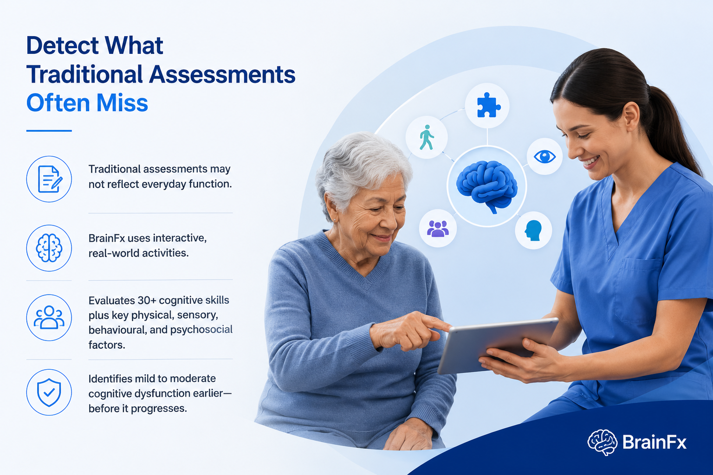
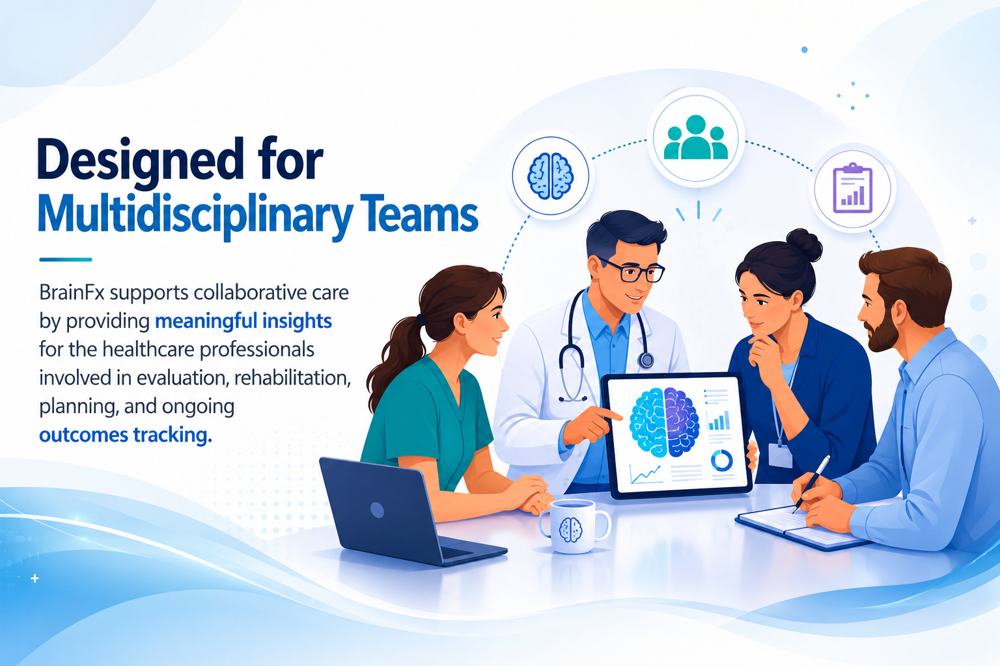

Transform Cognitive Care
Across the Entire Patient
Journey
Healthcare organizations are under increasing pressure to improve patient outcomes, reduce costs, optimize clinical resources, and deliver more personalized care. Yet cognitive dysfunction often goes undetected until it significantly impacts a patient's health, independence, or recovery.
BrainFx helps healthcare organizations identify subtle cognitive dysfunction earlier, enabling multidisciplinary care teams to make more informed clinical decisions from admission through discharge, rehabilitation, and ongoing community care.
Our neurofunctional assessments provide objective, actionable insights that support better care coordination, improved patient outcomes, and more efficient use of healthcare resources.
Function-Based View
Shows how cognitive challenges affect real-world performance.
Earlier Signal Detection
Identifies subtle changes sooner for more confident care.
Actionable Clinical Insight
Turns neurofunctional data into clearer care decisions.
Measures how cognition affects performance in real care environments and everyday demands.
Helps surface subtle shifts before they become larger barriers to recovery and independence.
Equips teams with objective information for planning, coordination, and follow-up care.
One Platform. Every Stage of Care.
BrainFx supports healthcare organizations across the full continuum of care with standardized neurofunctional insight that strengthens coordination, consistency, and visibility across every patient touchpoint.
From acute events to long-term follow-up, teams can work from the same neurofunctional data to guide assessment, care planning, recovery tracking, and cross-setting communication.
Detect What Traditional Assessments Often Miss
Many conventional cognitive assessments were designed decades ago and rely on paper-based tasks that may not reflect how individuals function in everyday life.
BrainFx takes a different approach. Using interactive, real-world activities grounded in neurofunctional science, BrainFx evaluates more than 30 cognitive skills alongside physical, sensory, behavioural, and psychosocial factors to create a more comprehensive picture of brain function.
Interactive neurofunctional activities reveal meaningful patterns across cognition, physical, sensory, behavioural, and psychosocial performance in context. This helps clinicians understand how subtle dysfunction affects everyday performance and functional independence. It also supports earlier, more confident care planning and recovery monitoring across the patient journey.

By evaluating more than 30 cognitive skills together with physical, sensory, behavioural, and psychosocial factors, BrainFx helps clinicians see patterns that may be missed by traditional paper-based assessments.
Improve Clinical Decision Making
BrainFx provides clinicians with objective data that supports better decisions throughout the care pathway.
Healthcare organizations use BrainFx to build clearer cognitive baselines, strengthen rehabilitation planning, support safer transitions, and monitor change over time with more confidence.
BrainFx turns objective data into a more usable decision-support layer for multidisciplinary teams.
Immediate automated scoring and reporting allow clinicians to spend less time documenting and more time delivering patient care.
Deliver Better Outcomes While Improving Efficiency
Healthcare leaders are challenged to do more with limited resources. BrainFx helps organizations create a more coordinated, data-driven approach to brain health while reducing administrative burden across the care journey.
Standardized neurofunctional insight supports earlier intervention, stronger referral pathways, and clearer documentation for teams working across departments.
Bring teams onto one consistent assessment model.
Automate reporting so clinicians can focus on care.
Catch subtle concerns sooner and act earlier.
Help teams route patients with clearer handoffs.
Make progress easier for patients to understand.
Keep documentation objective, repeatable, and aligned.
Track change over time with a consistent data set.
Turn fragmented observations into one shared view.
Designed for Multidisciplinary Teams
A shared neurofunctional view enables every discipline to contribute with greater clarity, consistency, and clinical confidence.
BrainFx is designed to strengthen collaborative care by delivering meaningful, standardized insight to the healthcare professionals involved in assessment, rehabilitation, care planning, and long-term outcomes monitoring.
By giving physicians, therapists, nurses, case managers, and researchers access to a consistent view of patient function, BrainFx helps reduce fragmentation across the care pathway and supports more coordinated, patient-centered decision-making.
Whether the priority is early identification, interdisciplinary communication, discharge planning, or progress tracking over time, BrainFx provides a shared foundation for more aligned treatment planning and better continuity of care.

Use objective insight to support diagnosis and care planning.

Connect functional findings to daily living and independence goals.
Use brain health context to guide recovery and movement strategies.
Add deeper neurofunctional context to cognitive evaluation and review.
Support communication and cognitive strategy planning with shared data.
Use consistent reporting to inform monitoring and patient transitions.

Coordinate support needs with a clearer picture of patient function.
Improve pathway coordination with standardized shared reporting.
Track progress over time and refine intervention planning.
Work with standardized outcome data across patient populations.
Enterprise-Ready for Modern Healthcare
BrainFx is built to scale across healthcare organizations of every size, from a single department to an integrated health system. The platform is designed to support modern, connected models of care with the flexibility required for implementation across diverse clinical environments.
Whether adopting BrainFx within one service area or across an entire healthcare network, organizations gain a digital platform that supports consistency, insight, and continuity at scale.
Support consistent evaluation workflows across teams and settings.
Reduce manual documentation and speed access to clinical insight.
Monitor change over time with a shared neurofunctional record.
Generate system-wide insight for planning, quality, and outcomes review.
Capture structured data that can support clinical and research initiatives.
Extend assessment and follow-up into remote care environments.
Equip teams for adoption with structured learning and implementation support.
Provide organizations with continued guidance as programs grow and evolve.
Better insight for earlier detection, personalized care, and stronger clinical decision making.
As healthcare continues to shift toward earlier detection, personalized medicine, and outcome-based care, organizations need tools that provide more than a cognitive score. They need meaningful insight that improves how decisions are made across the care journey.
BrainFx empowers healthcare organizations to detect subtle cognitive dysfunction earlier, monitor neurofunctional health over time, and deliver more targeted, person-centred care.